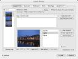

Download version {{ version}}
(ChangeLog)
 CopperExport for iPhoto is a plugin for iPhoto which allows you to export pictures directly into a Coppermine gallery. It has been tested with iPhoto 4-7 and Coppermine 1.3.x and 1.4.x.
Click on the thumbnail to see a larger screenshot.
I am aware that CopperExport 0.5.0 fails to run in recent versions of Snow Leopard and iPhoto.
Unfortunately, since the big move, I find myself without easy access to a Mac for development (I had a Mac at my previous job, and I use Windows at my new job), which pretty much makes fixing these bugs impossible. I also have stopped using Coppermine myself, which makes development even harder. Until I get a new machine, I will not be able to provide updates to CopperExport. Of course, if any developers out there want to make the appropriate fixes, I will happily accept patches that you submit, and produce a new release myself.
I apologize to my users for this not-so-happy state, and I want to assure you that as soon as possible, I will resume development. Thank you for your patience and your support, and for the many kind words you have sent me about the plugin itself.
Current version: CopperExport-0.5.0.dmg, released on October 24th, 2007. This release is a universal binary.
Older binary releases are available from the old project home page at berlios.de.
You can download the source code for this project in either zip or tar formats.
You can also clone the project with Git by running:
$ git clone git://github.com/zzamboni/copperexport
CopperExport is released under the BSD License.
If you have any comments, problems or questions, please post them at the issue tracker.
If you make any changes to the code, please fork the code in github and then send a pull request.
CopperExport for iPhoto requires Mac OS X 10.3 or later and iPhoto 4.x-7.x. iPhoto 2.x may work, but has not been tested. Versions of Mac OS X prior to 10.3 will certainly not work.
It has been tested with Coppermine 1.3.2, 1.3.3 and 1.4.0 through 1.4.13. Older and newer versions may work, but have not been tested.
CopperExport was written by Diego Zamboni. It is based on a very old version of the FlickrExport for iPhoto plugin by Fraser Speirs, which was originally released as open source.
You should follow me on Twitter (@zzamboni).
Email: copperexport@zzamboni.org
Home Page: http://www.zzamboni.org/copperexport/
GitHub project page: http://github.com/zzamboni/copperexport/
Pages in MacUpdate and Freshmeat.
CopperExport is completely free and open source. If you are feeling generous and would like to make a donation to support its development, please use the buttons below.
Get me something from my Amazon wishlist:

{kind=link}